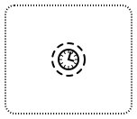
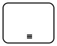

BPMN basics by examples
Business Process Model and Notation (BPMN) is a graphical representation for specifying business processes in a business process model Wikipedia.
Tip
This is an opinionated introduction to some of the most common BPMN 2.0 symbols and their use. For a more complete overview, check Camunda BPMN Tutorial, Camunda BPMN Primer or take a free Camunda BPMN 2.0 online course.
Note
This starter intentionally excludes event based gateways, most of the BPMN messaging symbols, and everything not yet supported by Camunda Zeebe engine (in time of writing).
Sequence flow
{kind=link}
BPMN sequence flow is made of at least one  start event,
start event,  end event and any amount of
end event and any amount of  tasks (BPMN activities) in connection between them.
tasks (BPMN activities) in connection between them. sequence-flow.bpmn
Naming of elements
{kind=link}
BPMN flow elements are named by using their process’ business domain terms. Events are named to describe business state of the process. Tasks (BPMN activities) are named using verbs to describe what to do in the process. sequence-flow-annotated.bpmn
Gateways and paths
{kind=link}
BPMN gateways control which one of the available paths is taken at the time of execution.  exclusive gateway in the example allows only one path at time to be followed at time (either to split or join the flow).
exclusive gateway in the example allows only one path at time to be followed at time (either to split or join the flow). gateways-and-paths.bpmn
Concurrent tokens
{kind=link}
BPMN token is a theoretical concept that is used as an aid to define the behavior of a process that is being performed. There can be any amount of concurrent tokens in a single running process. For example,  parallel gateway creates a new token for each outgoing path. Only when all tokens have been consumed, process is really completed.
parallel gateway creates a new token for each outgoing path. Only when all tokens have been consumed, process is really completed. concurrent-tokens.bpmn
Multiple end events
{kind=link}
Not all BPMN tokens need to reach the same end event for the process to complete. BPMN process may have as many end events as it makes sense for the business processs it describes. Not all end events need to be reached for the process to complete, but process completes when there are no more tokens alive. multiple-end-events.bpmn
Intermediate events
{kind=link}
In addition to start and end events, BPMN has  intermediate (throw) events too. The most simply use case for them, is to use empty intermediate throw events to mark relevant business states in the process (as metrics like KPIs in later data analysis).
intermediate (throw) events too. The most simply use case for them, is to use empty intermediate throw events to mark relevant business states in the process (as metrics like KPIs in later data analysis). intermediate-events.bpmn
Alternative start events
{kind=link}
While the plain start event could be triggered through APIs to start processes in custom ways, also BPMN itself supports multiple ways to start processes. For example, timer start event can start a new process instance periodically, or  message start event from a BPMN message (even from an another process instance).
message start event from a BPMN message (even from an another process instance). more-start-events.bpmn
Events at boundary
{kind=link}
Attaching events to task boundaries is where BPMN super powers really begin. In this example, a  non-interrupting timer boundary event is used to send reminders about incomplete tasks. Non-interrupting events, by their name, don’t interrupt the task, which they are connected to. Instead, they create a new token for the path they start (in the example, regularly as long as the task has not been completed).
non-interrupting timer boundary event is used to send reminders about incomplete tasks. Non-interrupting events, by their name, don’t interrupt the task, which they are connected to. Instead, they create a new token for the path they start (in the example, regularly as long as the task has not been completed). boundary-events.bpmn
Errors at boundary
There are two kind of errors in process automation:
Application errors, which are caused by technical issues like network outages or programming errors, and are fixed by retrying the failing part of the process once the technical issue has been solved.
Business errors, which are known exceptions in the process itself, and cannot be fixed by simply retrying, but must be expected and handled on the BPMN diagram level instead.
{kind=link}
In this example, a business error is being expected with error boundary event (which is always interrupting), and it is used to route the process to alternative end event. boundary-bpmn-error.bpmn
Embedded sub-process
{kind=link}
Embedded sub-process looks like a process with its own start event and end event(s) within its host process. It is a powerful pattern to use for wrapping tasks, which should share some boundary events. In this example, an  interrupting boundary timer event is used to cancel the whole sub-process.
interrupting boundary timer event is used to cancel the whole sub-process. embedded-subprocess.bpmn
{kind=link}
Event sub-process
{kind=link}
Event sub-process can either interrupt the execution of the main process (with interrupting start event) or run sub-processes in parallel to the main process (with non-interrupting start event). The example does latter with a  non-interrupting start timer event.
event-subprocess.bpmn
Multi-instance
{kind=link}
Tasks and embedded sub-processes can be configured to be multi-instance – the BPMN way to loop over a collection. The configuration can be either parallel or  sequential. Multi-instance requires an input collection to be configured for it, but then it executes task or sub-process separately for every input item in the collection with one BPN symbol (and on Zeebe engine also collects the output into configured output collection). multi-instance-subprocess.bpmn
Available task types
The examples above, use only so called undefined task. It is useful in drafting and documenting processes, but not really in actually implementing and automating the processes. Obviously, there are many more concrete task types.
User task

User task is a task, which is meant to be completed by a human through a connected user interface. Most common way to implement a user task is to show the user a form.
Manual task

Manual task is usually a human task, which cannot completed through a connected user interface. Manual task symbols are rare in automated processes, but are sometimes for documentation purposes (while BPMN engines skip them similarly to undefined tasks).
Service task

Service task represents automated task. All  Robot Framework automation tasks are service tasks.
Robot Framework automation tasks are service tasks.
Service task (custom)
Now that service task has become the core component in process automation, it has also become a thing to customize its symbol to make it easier to reconize service tasks by some categorization. So, when you see a task element with weird symbol, like Robot Framework logo, it is safe to assume that it is a service task with just a custom symbol.
Call activity
{kind=link}
Call activity calls a such configured sub-process, which is defined separately from the main process (unlike embedded sub-process). It allows to abstract recurring parts of process into re-usable sub-processes (while cleaning up clutter.
{kind=link}
In this example, Call activity is used to hide the embedded sub-process details, which have been shown in the earlier examples.
call-activity-process.bpmn
Business rule task

Business rule task is a special task type reserved for automated rule-based decision making in a process. It’s typically configured to use DMN (Decision Model and Notation) decision tables, designed to describe business rules. In addition, DMN tables can be maintained separately from the process models, for example, to allow faster iterations.
This imaginary bus ticket pricing is an example, in which decision table should be superior to possible alternatives, like “just coding it”:
When Age integer | And Discount group string | And Travelling alone boolean | Then Price double | Annotations | |
|---|---|---|---|---|---|
| 1 | [0..4] | 0.00 | - | ||
| 2 | [5..6] | false | 0.00 | - | |
| 3 | [5..6] | true | 2.00 | - | |
| 4 | [7..11] | 2.00 | - | ||
| 5 | >=12 | "student" | 2.80 | 20 % discount | |
| 6 | >=12 | "pensioner" | 2.80 | 20 % discount | |
| 7 | >=12 | not(["student", "pensioner"]) | 3.50 | Regular price |
Note
This example is designed for Camunda Platform 7, because Camunda’s DMN Simulator does not yet support alla value types available in Zeebe.